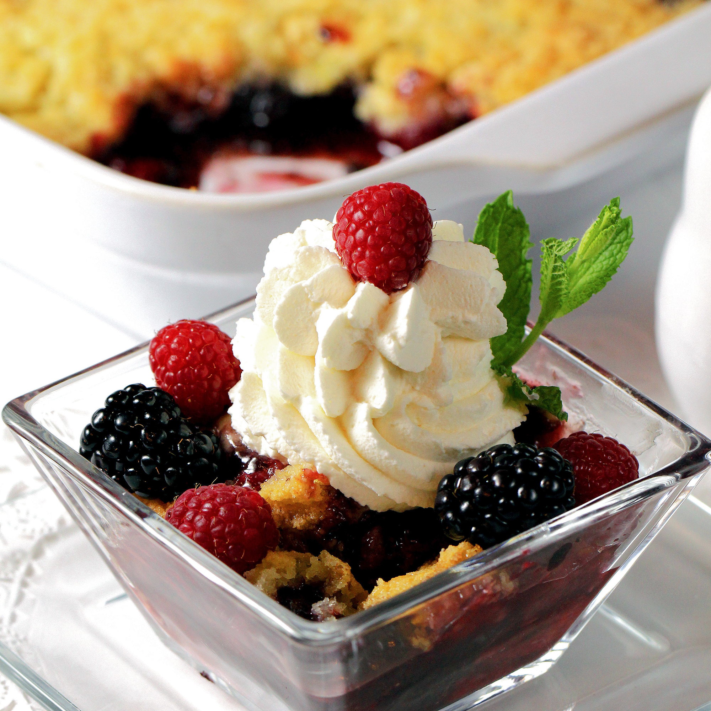

Triple Berry Crisp

Description
This is a wonderful berry crisp.
Ingredients
- 1½ cups fresh blackberries
- 1½ cups fresh raspberries
- 1½ cups fresh blueberries
- 4 tablespoons white sugar
- 2 cups all-purpose flour
- 2 cups rolled oats
- 1½ cups packed brown sugar
- 1 teaspoon ground cinnamon
- ½ teaspoon ground nutmeg
- 1½ cups butter
Steps
- Preheat oven to 350 degrees F (175 degrees C).
- In a large bowl, gently toss together blackberries,
raspberries,
blueberries, and white sugar; set aside.
- In a separate large bowl, combine flour, oats, brown sugar,
cinnamon, and nutmeg. Cut in butter until crumbly. Press
- Bake in the preheated oven for 30 to 40 minutes, or until
fruit
is bubbly and topping is golden brown.